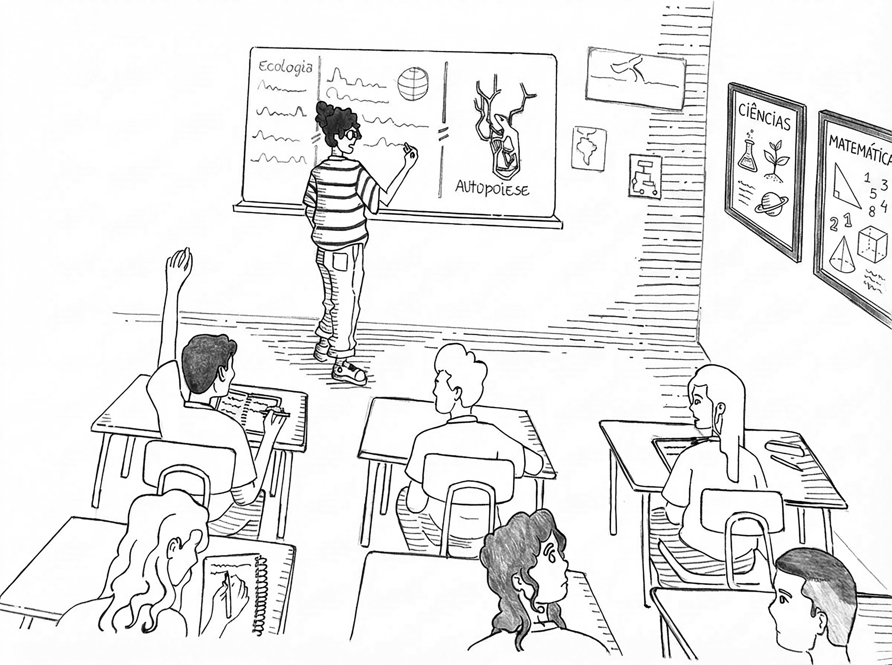
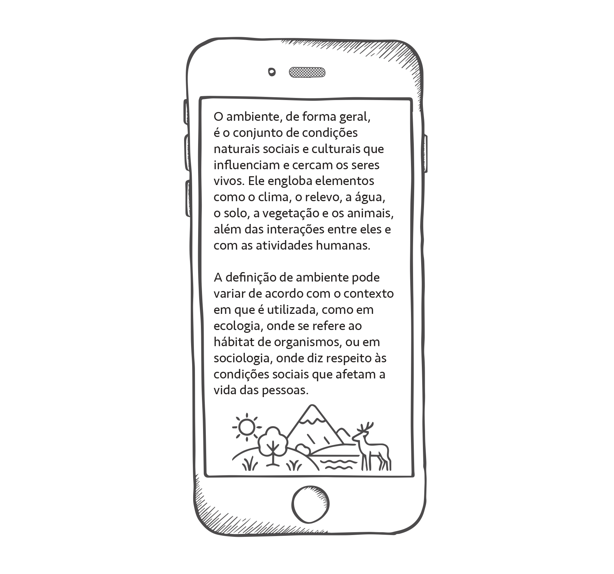
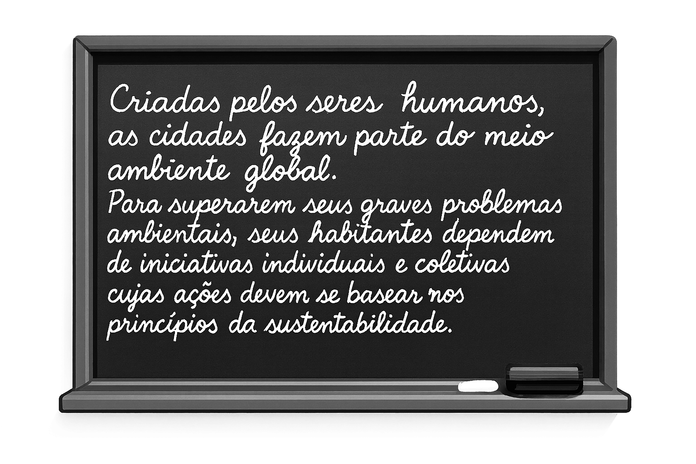

— Bom dia, turma! Todo mundo animado para a aula de hoje? — iniciou Rita, esboçando um largo sorriso.
— Pois bem, hoje iniciaremos a discussão sobre o tema “meio ambiente e sustentabilidade em espaços urbanos”. Mas, antes, vamos relembrar uma palavrinha muito importante: ambiente. Quem não dominar muito bem a ideia de “ambiente” terá muita dificuldade para compreender os demais conteúdos que vêm pela frente. E depois, no dia da prova, não quero saber de ninguém dizendo: “Professora Rita, não entendi nada dessa questão...” Combinado?
A turma era composta por 27 alunos, e, naquele dia, havia cinco a menos. No “fundão”, como costumam dizer por aqui, alguns alunos e alunas esbanjavam energia, enquanto outros mal conseguiam manter os olhos abertos.
— Aí, atenção para a chamada! Quem comer bola e não responder, depois, não venha choramingar, viu?! — advertiu a professora, irritada com a algazarra.
— Vamos começar, então, pela pergunta central: o que vocês entendem por ambiente?
A pergunta lançada por Rita provocou um silêncio sepulcral. A maioria, com cara de paisagem, tentava desviar o olhar da professora.
— Não adianta se fingirem de galinha morta. Vou apontar meu dedo para a lista de chamada e sortear um de vocês. Sanderley — disse Rita, apontando o dedo. — Cadê o Sanderley?
— Tô aqui, professora. — respondeu o jovem, amedrontado.

— Responda pra gente, Sanderley: o que você entende por ambiente?
Esfregando a caneta contra sua farta franja, o jovem respondeu:
— Professora, ambiente é tudo que é natureza... assim, plantas, animais, florestas, rios, oceanos, montanhas... É isso, professora.
— E o que vocês acharam da resposta do Sanderley? Será que o ambiente se resume às coisas que ele citou, ou há mais características que podemos explorar? — perguntou Rita, na esperança de instigar a discussão.
Ninguém deu um pio.
— Professora? Tive uma ideia! — adiantou-se Mariana, uma das habitantes do “fundão”.
— Levante-se, então, e fale em voz alta a sua ideia para toda a turma ouvir. Aí, pessoal, vamos ouvir a colega!
— A senhora podia deixar a gente formar grupos para pesquisar no Google o que é ambiente e, depois, cada grupo entrega por escrito o que encontrou. O que a senhora acha da ideia?
Rita aceitou de pronto, já que a proposta de Mariana poderia movimentar toda a turma em torno do tema proposto.
— Tudo bem. Formem grupos de até quatro componentes. Vou marcar vinte minutos. Depois, cada grupo vai ler o que encontrou. Combinado?
— Professora, podemos fazer a pesquisa fora da sala? — sugeriu outro aluno.
— Nem pensar!
Enquanto a turma buscava, em seus smartphones, a melhor definição para ambiente, Rita também aproveitou para consultar uma plataforma de inteligência artificial (IA), a fim de encontrar uma definição mais atualizada.
Encerrado o tempo, cada grupo apresentou sua definição, fornecida pelo Google — algumas muito resumidas, cabendo em uma única linha; outras, mais detalhadas, extraídas da enciclopédia on-line Wikipédia.
Após o último grupo se pronunciar, Rita enalteceu o esforço de todos e apresentou o resultado de sua própria busca:
— Pessoal, atenção! Viram como é bacana usar os recursos da internet para realizar pesquisas na escola? Vocês trouxeram definições importantes sobre a ideia de ambiente. Eu também fiz a minha pesquisa e vou ler para vocês. Então, por favor, escutem com atenção e em silêncio:

— Então, pessoal, viram como a ideia de ambiente vai muito além de floresta, animais, plantas, rios, montanhas e oceanos? É tudo isso junto, e muito mais! Precisamos pensar nas interações entre todas as partes que compõem um ambiente. Não podemos pensar em ambiente sem pensar nas relações que acontecem dentro dele — concluiu Rita, entusiasmada.
— Agora, vamos pensar o ambiente a partir do lugar onde vivemos: a cidade. Peguem seus cadernos e copiem.
Voltando-se para a lousa, Rita começou a escrever.

— Todos copiaram?
— Simmmmmm! — responderam em uníssono.
— Pessoal, atenção! Vou lançar uma atividade de pesquisa para vocês fazerem em casa, valendo nota, viu? Então, vamos lá: prestem atenção.
Como sabemos, os bairros próximos à nossa escola, onde vocês residem, são formados, em sua maioria, por famílias vindas das mais diversas localidades do Brasil — principalmente das regiões Norte e Nordeste. Pela idade de vocês, imagino que a maioria já tenha nascido por aqui. Mas, com certeza, seus pais, tios e avós nasceram em algumas dessas regiões do interior do país.
— Assim — prosseguiu Rita —, vocês que nasceram aqui têm uma memória do ambiente local onde vivem, ok? Mas seus pais, tios e avós possuem memórias de outros ambientes além deste, ou seja, são memórias dos lugares onde viveram antes de se mudarem para a nossa região. Até aqui tudo bem, pessoal?
— Tudo bem, professora! — confirmaram alguns alunos e alunas.
— Acontece — prosseguiu Rita — que, no convívio diário com nossos pais, tios e avós, a gente acaba herdando parte de suas memórias, porque eles, vira e mexe, contam pra gente algumas de suas histórias sobre acontecimentos nesses outros ambientes por onde viveram.
Assim, todos nós acabamos carregando dois tipos de memórias: uma sobre o ambiente onde vivemos e outra sobre os ambientes em que nossos pais, tios e avós viveram.
— Alguma dúvida até aqui?
— Nãoooo!!! — responderam em uníssono.
— Se não há dúvidas sobre o que acabei de dizer, peguem seus cadernos, que eu vou ditar as questões. Prontos? Então, lá vai:
Questão 1: descreva alguma lembrança que você guarda em sua memória a respeito do ambiente do seu bairro e das transformações que viu acontecer nele.
Questão 2: descreva alguma lembrança que você guarda em sua memória, contada por seus pais, tios ou avós, sobre os ambientes onde viveram antes de se mudarem para a nossa região.
— Alguma dúvida, queridas e queridos alunos?
— Professora? — antecipou-se um dos alunos, erguendo o braço.
— Pois não, Rodésio. Qual é a dúvida?
— Quem já copiou a questão pode ir embora?
— Não! Vocês vão guardar o material e esperar, caladinhos, até ouvirem o sinal — sentenciou Rita, aborrecida com a intervenção de Rodésio.
Quatro dias depois, Rita chegou à escola ansiosa para ver o resultado da atividade que havia proposto na aula anterior. Seu plano era desdobrar cada relato, com o objetivo de avançar na discussão sobre o conceito de ambiente, dando ênfase aos contextos locais nos quais aqueles jovens estudantes estavam inseridos.
— Bom dia, turma animada! Bora ler os relatos que vocês trouxeram? Acordei muito animada para ouvi-los — declarou Rita, dando um largo sorriso. — Quem quer ser o primeiro a apresentar?
A mesma cena se repetiu: ninguém se prontificou. Desconcertada, Rita recorreu à estratégia da lista de chamada.
— Amanda! Você foi a sorteada. Apresente o seu relato.
— Professora? Precisa ir aí na frente? — perguntou Amanda, amedrontada.
— Não. Você pode apresentar aí mesmo, de sua carteira. Mas, por favor, leia em voz alta.
— Professora, do lugar onde meus pais moravam, eu não sei quase nada. Só sei que é lá da Bahia. Agora, do ambiente do meu bairro... assim... eu lembro que, quando era bem pequena, a gente frequentava uma igreja que ficava numa praça. Hoje, a igreja não está mais lá, ela se mudou para perto do terminal de ônibus.
E, de forma quase idêntica, seguiram as demais apresentações. A maioria dos alunos e alunas pouco se esforçou para apresentar alguma lembrança mais substanciosa sobre os ambientes onde viveram seus pais, tios e avós. Ao descreverem suas próprias memórias a respeito dos bairros onde moravam, também não demonstraram qualquer interesse pelos processos de transformação.
Decepcionada com o resultado da atividade proposta, Rita passou o resto do dia refletindo sobre os fatores que poderiam explicar aquele insucesso. Seu objetivo era claro: instigar seus alunos a refletirem sobre as dinâmicas de transformação pelas quais passam os diferentes tipos de ambientes e sobre as interações entre os seres que neles vivem.
Na aula que se seguiu àquela apresentação, Rita insistiu no tema, apostando em alguns recursos didáticos: buscou imagens no Google Earth para que visualizassem a escola e os bairros do entorno; pesquisou na internet imagens antigas desses lugares, a fim de provocar reflexões sobre os impactos positivos e negativos gerados nesses ambientes ao longo do processo de urbanização; e também acessou entrevistas de moradores em jornais locais, expondo os problemas enfrentados em seus bairros.
Contudo — e para a decepção de Rita — os recursos por ela oferecidos não surtiram o efeito esperado. Ao localizarem seus bairros nas imagens apresentadas, em vez de se interessarem pelas características socioambientais destacadas por Rita, muitos alunos preferiram fazer associações jocosas, denegrindo a imagem dos próprios bairros onde moravam.
Mas, como o bimestre já estava no fim e as provas finais aconteceriam logo na semana seguinte, Rita precisou cumprir o calendário escolar “correndo” com o conteúdo programático.
— Pessoal, semana que vem será a nossa prova final — anunciou Rita, deixando a turma apreensiva.
— Professora Rita, vai cair toda a matéria? — perguntou uma aluna.
— Sim. Serão os capítulos três, quatro e cinco do nosso livro.
— Ah, não, professora... Tudo isso?! — reclamou outro aluno.
— A prova vai ser em grupo? — perguntou um aluno, na tentativa de fazer a professora ceder.
— A prova será individual! — sentenciou Rita. — E vou dar ponto para organização também. Portanto, tratem de caprichar na caligrafia; professor nenhum é obrigado a decifrar garranchos. Se eu não entender o que está escrito, anulo toda a questão. Combinado?
E assim foi. Rita aplicou a prova, avaliou seus vinte e sete alunos e lançou as notas em sua planilha. Para fazerem a prova, a turma praticamente decorou os pontos contidos nos três capítulos. Todos foram aprovados.
Entretanto, o que em nenhum momento passou pela mente de Rita foi o fato de que, apesar de toda a turma ter se esforçado para estudar os conteúdos dos três capítulos e ter alcançado as médias suficientes para a aprovação, tal feito não representava a conquista de uma consciência ambiental local. Ao contrário, aquelas avaliações revelavam que os alunos e alunas, mesmo tendo acessado os conteúdos programáticos por meio das leituras, apenas reforçaram um intrigante processo de disrupção entre, de um lado, a ideia de meio ambiente construída no espaço escolar e, de outro, a concepção de meio ambiente relacionada ao cotidiano — a escola, o bairro, a casa e a cidade.
Essa descontinuidade apontava para uma espécie de miopia socioambiental que impedia os estudantes de perceberem as interfaces entre os diversos domínios ecogeográficos. Paradoxalmente, aqueles jovens coexistiam com dois tipos de meio ambiente: um que se podia observar sem dele tomar parte, e outro no qual se vivia, porém afastado de toda a realidade sócio-histórica e ambiental que o compõe — sendo eles próprios, os estudantes e suas famílias, parte constituinte dessa realidade. Literalmente, eles estavam perdidos em seus próprios espaços.
E durante a última reunião pedagógica de encerramento do bimestre, Rita comentou, orgulhosa, com seus colegas:
— Então, colegas... Foi bem corrido este bimestre, né? Mas, felizmente, consegui cumprir as unidades temáticas. O importante é fazer com que os alunos acessem os conhecimentos previstos e alcancem as habilidades esperadas, não é mesmo?
Todos concordaram.